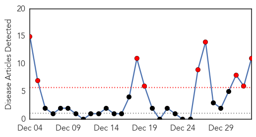

Swine Flu
30-Day Web Trend
9 alerts, 0 warnings

30-Day Twitter Trend
1 alerts, 0 warnings

Article Locations

Article Confidences

Top Articles:
- 1.000
- IMA Issues Guidelines as 2 Fresh Cases of Swine Flu Reported in Delhi
- 1.000
- 2 fresh cases of swine flu in Delhi, 88 infected in Telangana and Andhra last year : India, News
- 0.999
- Symptom of swine flu could be minor fever with breathlessness, says IMA
- 0.999
- No need to panic, monitoring the situation
- 0.997
- Swine flu deaths in Dec raise alarm in Telangana
- 0.996
- Health department monitoring spread of swine flu, says JP Nadda, Video Gallery
- 0.988
- Flu vaccine may not help this season
- 0.972
- Workers to be trained to handle swine flu cases in Delhi
- 0.956
- Two fresh cases of swine flu reported in Delhi
- 0.942
- Hospitals well-equipped to handle swine flu cases: Nadda
- 0.939
- 2 more swine flu cases
Top Tweets:
-
No tweets found for Jan 02, 2015
Influenza
30-Day Web Trend
2 alerts, 0 warnings

30-Day Twitter Trend
3 alerts, 0 warnings

Article Locations

Article Confidences
Top Articles:
- 1.000
- Flu season expected to be rough this year
- 1.000
- Treat Swine Flu like ordinary flu
- 0.999
- 'Widespread' flu pounds Metro Detroiters
- 0.999
- FDA shares advice to avoid colds and flu
- 0.998
- Hints for Health
- 0.998
- FDA Shares Advice to Avoid Colds and Flu
- 0.997
- Flu cases in Chicago area climb, keep hospitals busy
- 0.996
- Marion flu cases double as state numbers spike
- 0.996
- Flu cases slam Colorado hospitals; assisted-living centers hit hard
- 0.996
- Flu cases slam Colorado hospitals; assisted-living centers hit hard
- 0.995
- Teen's death highlights extent of flu epidemic, Centers for Disease Control says
- 0.995
- Health officials tout flu shots amid outbreak
- 0.995
- W.Va. Health Officials Urge Precautions to Prevent Flu Outbreak
- 0.994
- Flu cases increase sharply in Chautauqua and Niagara counties
- 0.994
- W.Va. seeing an early arrival of flu season
- 0.993
- Flu Spike Causes Delaware Hospitals to Block Children From Visiting
- 0.993
- High levels of flu activity being reported around US
- 0.992
- Flu bug bites hard: Cases in Greene County triple in 2 weeks
- 0.991
- How Bad Is The Flu Epidemic In 2015? Tamiflu Supply Issues Reported At Numerous Pharmacies
- 0.991
- Why the Flu Vaccine Doesn't Always Work
- 0.988
- St. Joseph News-Press and FOX 26 KNPN: Editorials
- 0.985
- Maine Official Expects Flu Levels to Rise in Coming Months
- 0.985
- Cautious Doctors Use Telemedicine to Diagnose Flu
- 0.983
- Some doctors diagnosing flu patients over the phone
- 0.982
- US Declares Flu 'Epidemic'
- 0.982
- Cautious Doctors Use Telemedicine to Diagnose Flu
- 0.982
- SA doctors fight record flu season
- 0.976
- Schuyler County Increasing Flu Cases
- 0.975
- Nebraska health experts see rise in number of flu cases
- 0.950
- International Equine Disease Report, Third Quarter 2014
- 0.949
- Flu spreads in 36 states
- 0.924
- The Nation is in Flu Epidemic but California is Doing OK
- 0.923
- Flu Reaches Epidemic Status
- 0.892
- Local Hospital Restrictions Target Flu
- 0.755
- H5 bird flu detected in backyard poultry flock near Benton City, Washington
- 0.735
- Still Need a Flu Shot? Last Chance Clinic Coming up
- 0.702
- Oregon Ag Department hopes bird flu cooped up
- 0.670
- Flu reaches epidemic levels in nation, area
- 0.645
- Hong Kong suspends Chinese poultry imports on bird flu concern
- 0.639
- Former Resident Retires From Career With CDC - EmmetsburgNews.com
Top Tweets:
-
No tweets found for Jan 02, 2015